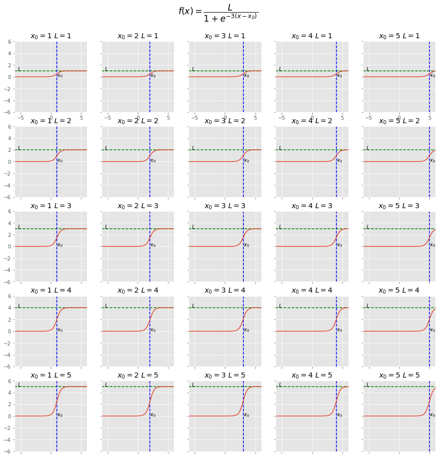
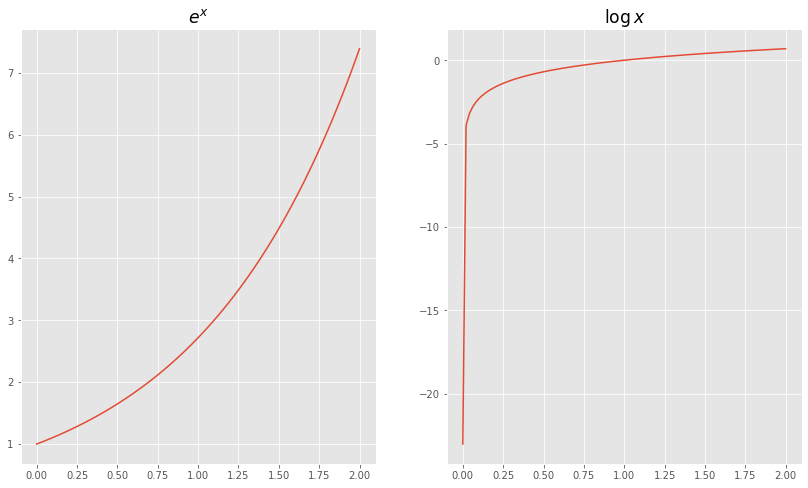
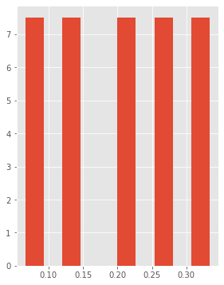

Blogging from Uranus
import numpy as np
import matplotlib.pyplot as plt
plt.style.use('ggplot')
Logistic function
\[f(x)=\dfrac{L}{1+e^{-k\left(x-x_{0}\right)}}\]$x_{0}$, the ${\displaystyle x}$ value of the sigmoid’s midpoint;
${\displaystyle L}$, the curve’s maximum value;
${\displaystyle k}$, the logistic growth rate or steepness of the curve
def logistic(x, x0, L, k=3):
return L/(1+np.exp(-k*(x-x0)))
log_v = np.vectorize(logistic)
fig = plt.figure(figsize=(15, 15))
fig.tight_layout()
gs = fig.add_gridspec(5, 5)
def plot_logistic(ax, x0, L):
x = np.linspace(-6, 6)
ax.plot(x, log_v(x, x0, L))
ax.set_xlim(-6, 6)
ax.set_ylim(-6, 6)
ax.hlines(L, *ax.get_ylim(), color='green', linestyles='dashed')
ax.annotate("$L$", (-5.5, L))
ax.vlines(x0, *ax.get_xlim(), color='blue', linestyles='dashed')
ax.annotate("$x_0$", (x0, 0))
ax.set_title(f"$x_0={x0}$ $L={L}$")
vals = [1, 2, 3, 4, 5]
for i, L in enumerate(vals):
for j, x0 in enumerate(vals):
ax = fig.add_subplot(gs[i, j])
if (i!=0):
ax.set_xticklabels([])
if (j!=0):
ax.set_yticklabels([])
plot_logistic(ax, x0, L)
fig.suptitle("$f(x)=\dfrac{L}{1+e^{-3(x-x_0)}}$",x = 0.5, y=0.95, fontsize='xx-large')
# fig.savefig('test.png')
Text(0.5, 0.95, '$f(x)=\\dfrac{L}{1+e^{-3(x-x_0)}}$')

Exponential
import sympy
x0 = np.linspace(1e-10, 2, 100)
y0 = np.exp(x0)
x1 = np.linspace(1e-10, 2, 100)
y1 = np.log(x1)
fig = plt.figure(figsize=(14, 8))
gs = fig.add_gridspec(1, 2)
ax = fig.add_subplot(gs[0, 0])
ax.plot(x0, y0)
ax.set_title("$e^x$", fontsize='xx-large')
ax = fig.add_subplot(gs[0, 1])
ax.plot(x1, y1)
ax.set_title("$\log{x}$", fontsize='xx-large')
Text(0.5, 1.0, '$\\log{x}$')

SoftMax
- commonly used activation function.
- takes in a vector of real numbers
- maps them to values between $[0, 1)$
- the sum of the output vector is 1
- the intuition is
some intuition
- suppose the original vector is [1, 2, 3, 4, 5].
- if we make this a probability distribution by dividing by the sum, we’d get
x = np.array([1, 2, 3, 4, 5])
x / x.sum()
array([0.06666667, 0.13333333, 0.2 , 0.26666667, 0.33333333])
y = (np.exp(x) / np.exp(x).sum())
fig = plt.figure(figsize=(10, 6))
fig.clf()
gs = fig.add_gridspec(1, 2)
ax = fig.add_subplot(gs[0, 0])
ax.hist(x/x.sum(), density=True)
(array([7.5, 0. , 7.5, 0. , 0. , 7.5, 0. , 7.5, 0. , 7.5]),
array([0.06666667, 0.09333333, 0.12 , 0.14666667, 0.17333333,
0.2 , 0.22666667, 0.25333333, 0.28 , 0.30666667,
0.33333333]),
<BarContainer object of 10 artists>)
